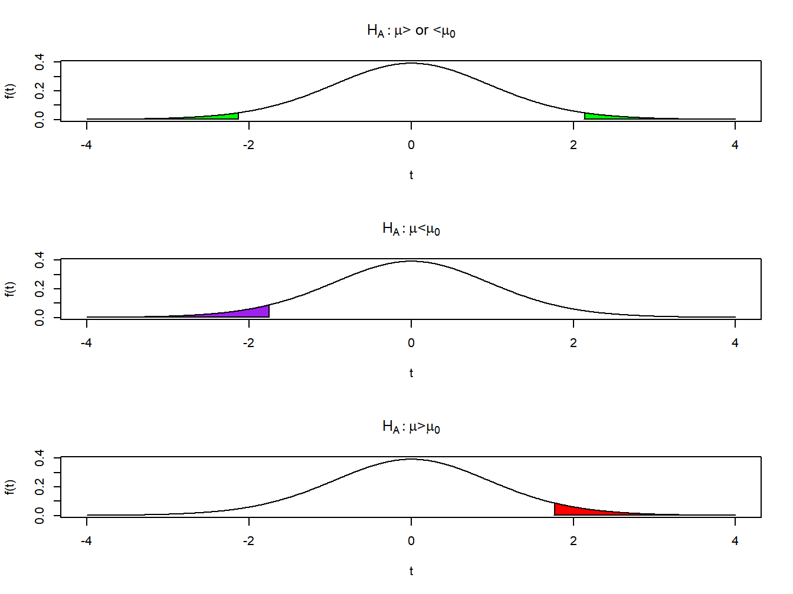
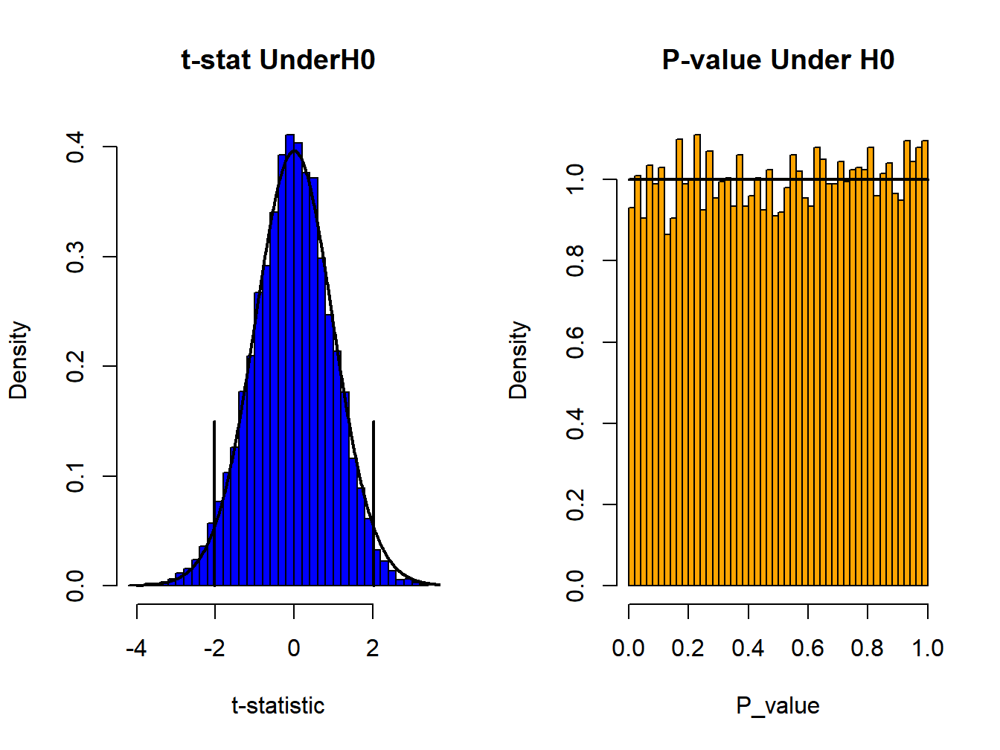
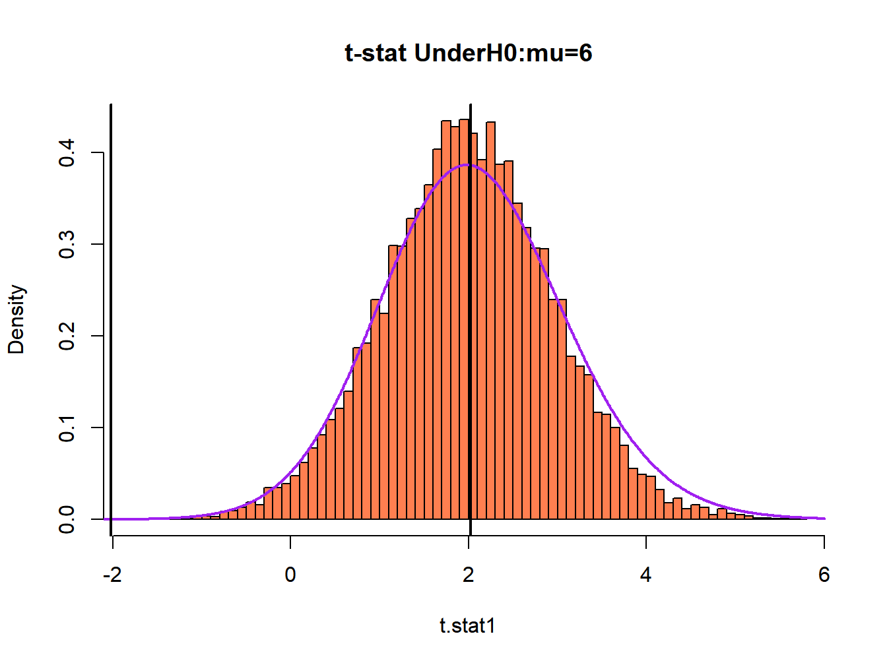

Chapter 4 Inferences for Population Means
Researchers often are interested in making statements regarding unknown population means and medians based on sample data. There are two common methods for making inferences: Estimation and Hypothesis Testing. The two methods are related and make use of the sampling distribution of the sample mean when making statements regarding the population mean.
Estimation can provide a single “best” prediction of the population mean, a point estimate, or it can provide a range of values that hopefully encompass the true population mean, an interval estimate. Hypothesis testing involves setting an a priori (null) value for the unknown population mean, and measuring the extent to which the sample data contradict that value. Note that a confidence interval provides a credible set of values for the unknown population mean, and can be used to test whether or not the population mean is the null value. Both methods involve uncertainty as we are making statements regarding a population based on sample data.
4.1 Estimation
For large samples, the sample mean has an approximately normal sampling distribution centered at the population mean, \(\mu\), and a standard error \(\sigma/\sqrt{n}\). When the data are normally distributed, the sampling distribution is normal for all sample sizes. For normal distributions, 95% of its density lies in the range (mean +/- 1.96 SD). Thus, when we take a random sample, we obtain the following probability statement regarding the sample mean.
\[ \overline{Y} \stackrel{\cdot}{\sim} N\left(\mu, SE\{\overline{Y}\}=\frac{\sigma}{\sqrt{n}}\right) \quad \Rightarrow \quad P\left(\mu-z_{\alpha/2}\frac{\sigma}{\sqrt{n}} \leq \overline{Y} \leq \mu+z_{\alpha/2}\frac{\sigma}{\sqrt{n}}\right) \approx 1-\alpha\]
\[\mbox{ where } P\left(Z \geq z_a\right) = a \]
\[ \Rightarrow \quad 1-\alpha \approx P\left(-z_{\alpha/2} \leq \frac{\overline{Y} - \mu}{\sigma/\sqrt{n}} \leq z_{\alpha/2}\right) = P\left(\overline{Y}-z_{\alpha/2}\frac{\sigma}{\sqrt{n}} \leq \mu \leq \overline{Y}+z_{\alpha/2}\frac{\sigma}{\sqrt{n}}\right) \]
Some commonly used coverage probabilities \((1-\alpha)\) are given here, along with the corresponding \(z\) values.
\[ 1-\alpha=.90 \quad \Rightarrow \quad \alpha=.10 \quad\Rightarrow \quad\frac{\alpha}{2}=.05 \quad \Rightarrow \quad z_{.05}=1.645 \] \[1-\alpha=.95 \quad \Rightarrow \quad z_{.025}=1.96 \qquad 1-\alpha=.99 \quad \Rightarrow \quad z_{.005}=2.576 \]
Note that in the probability statements above, \(\mu\) is a fixed, unknown constant in practice, and \(\overline{Y}\) is a random variable that varies from sample to sample. The probability refers to the fraction of the samples that will provide sample means such that the lower and upper bounds “cover” \(\mu\). Also, in practice, \(\sigma\) will be unknown and need to be replaced by the sample standard deviation.
A Large-Sample \((1-\alpha)100\%\) Confidence Interval for a Population Mean \(\mu\) is given below, where \(\overline{y}\) and \(s\) are the observed mean and standard deviation from a random sample of size \(n\) and \(\widehat{SE}\{\overline{Y}\}\) represents the estimated standard error of the sample mean.
\[ \overline{y} \pm z_{\alpha/2} \widehat{SE}\{\overline{Y}\} \qquad \qquad \overline{y} \pm z_{\alpha/2}\frac{s}{\sqrt{n}} \]
When the data are normally distributed, for small samples (although this has shown to work well for other distributions), replace \(z_{\alpha/2}\) with \(t_{\alpha/2, n-1}\).
\[ \overline{y} \pm t_{\alpha/2, n-1} \widehat{SE}\{\overline{Y}\} \qquad \qquad \overline{y} \pm t_{\alpha/2, n-1}\frac{s}{\sqrt{n}} \]
Any software package or spreadsheet that is used to obtain a confidence interval for a mean (or difference between two means) will always use the version based on the \(t\)-distribution. There will be settings, when making confidence intervals for parameters, that there is no justification for using the \(t\)-distribution, and we will make use the \(z\)-distribution, as do statistical software packages.
Example 4.1: NHL Players’ BMI
The Body Mass Indices for the 2014/5 NHL players are approximately normally distributed with mean \(\mu=26.514\) and standard deviation \(\sigma=1.449\). We take 10000 random samples of size \(n=12\), implying a standard error of \(\sigma_{\overline{Y}}=1.449/\sqrt{12}=0.418\). We count the number of the 10000 sample means that lie in the ranges \(\mu \pm z_{\alpha/2}\sigma_{\overline{Y}}\) for the three values of \(1-\alpha\) given above. The results are given in Table 4.1.
| 90% Confidence | 95% Confidence | 99% Confidence | |
|---|---|---|---|
| Z - True SE | 0.9014 | 0.9512 | 0.9820 |
| Z - Estimated SE | 0.8754 | 0.9297 | 0.9649 |
| t - Estimated SE | 0.9045 | 0.9545 | 0.9920 |
Of the 10000 sample means, 9014 (90.14%) lied within \(\mu \pm 1.645(.418)\), 9512 (95.12%) within \(\mu \pm 1.96(.418)\), and 9820 (98.20%) within \(\mu \pm 2.576(.418)\). Had we constructed intervals of the form \(\overline{y} \pm z_{\alpha/2}(.420)\) for each sample mean, the coverage rates for \(\mu\) would have been the same values (90.14%, 95.12%, 98.20%).
When the population standard error \(SE\{\overline{Y}\}=\sigma/\sqrt{n}\) is replaced by the estimated standard error \(\widehat{SE}\{\overline{Y}\}=s/\sqrt{n}\), which varies from sample to sample, we find the coverage rates of the intervals decrease. When constructing intervals of the form \(\overline{y} \pm z_{\alpha/2} s/\sqrt{n}\), the coverage rates fall to 87.54%, 92.97%, and 96.49%, respectively. This is a by-product of the fact that the sampling distribution of the standard deviation is skewed right, and its median is below its mean. Whenever the sample standard deviation is small, the width of the constructed interval is shortened.
When using the estimated standard error, replace \(z_{\alpha/2}\) with the corresponding critical value for the \(t\)-distribution, with \(n-1\) degrees of freedom: \(t_{\alpha/2,n-1}\). For this case, with \(n=12\), we obtain \(t_{.05,11}=1.796\), \(t_{.025,11}=2.201\), and \(t_{.005,11}=3.106\). When \(z\) is replaced by the corresponding \(t\) values, the coverage rates for the constructed intervals with the estimated standard errors reach their nominal rates: 90.45%, 95.45%, and 99.20%, respectively.
For the first random sample of the 10000 generated, we observe \(\overline{y}=27.140\) and \(s=1.429\). The 95% Confidence Interval for \(\mu\) based on the first sample is obtained as follows.
\[ \overline{y} \pm t_{.025,n-1}\frac{s}{\sqrt{n}} \equiv 27.140 \pm 2.201\left(\frac{1.429}{\sqrt{12}}\right) \equiv 27.140 \pm 0.908 \equiv (26.232 , 28.048) \]
Thus, this interval does contain \(\mu = 26.514\).
\[ \nabla \]
Often, researchers choose the sample size so that the margin of error will not exceed some fixed level \(E\) with high confidence. That is, we want the difference between the sample and population means to be within \(E\) with confidence level \(1-\alpha\). This means the width of a \((1-\alpha)100\%\) Confidence Interval will be \(2E\). This can be done in one calculation based on using the \(z\) distribution, or more conservatively, by trivial iteration based on the \(t\)-distribution. Either way, we must have an approximation of \(\sigma\) based on previous research or a pilot study.
\[ z: \quad E = z_{\alpha/2} \frac{\sigma}{\sqrt{n}} \quad \Rightarrow \quad n=\left(\frac{z_{\alpha/2} \sigma}{E}\right)^2 \] \[ t: \mbox{Smallest }n \mbox{ such that } E \leq t_{\alpha/2, n-1} \frac{\sigma}{\sqrt{n}} \]
Example 4.2: Estimating Population Mean Male Rock and Roll Marathon Speed
Suppose we want to estimate the population mean of the male Rock and Roll marathon running speeds within \(E=0.20\) miles per hour with 95% confidence. We treat the standard deviation as known, \(\sigma=1.058\). The calculation for the sample size based on the \(z\)-distribution is given below, followed by R commands that iteratively solve for \(n\) based on the \(t\)-distribution.
\[ z: \quad z_{.025} = 1.96 \quad n=\left(\frac{1.96(1.058)}{0.20}\right)^2=107.5 \approx 108\]
## n E.t
## [1,] 110 0.1999336Since \(n\) was needed to be so large, \(z_{.025}\) and \(t_{.025,n-1}\) are very close, and both methods give virtually the same \(n\) (108 and 110).
4.2 Hypothesis Testing
In hypothesis testing, a sample of data is used to determine whether a population mean is equal to some pre-specified level \(\mu_0\). It is rare, except in some situations to test whether the mean is some specific value based on historical level, or government or corporate specified level to have a null value to test. These tests are more common when comparing two or more populations or treatments and determining whether their means are equal. The elements of a hypothesis test are given below.
- Null Hypothesis \((H_0)\) - Statement regarding a parameter that is to be tested. It always includes an equality, and the test is conducted assuming its truth.
- Alternative (Research) Hypothesis \((H_A)\) - Statement that contradicts the null hypothesis. Includes “greater than” \((>)\), “less than” \((<)\),or “not equal to” \((\neq)\)
- Test Statistic (T.S.) - A statistic measuring the discrepancy between the sample statistic and the parameter value under the null hypothesis (where the equality holds).
- Rejection Region (R.R.) - Values of the Test Statistic for which the Null Hypothesis is rejected. Depends on the significance level of the test.
- p-value - Probability under the null hypothesis (at the equality) of observing a Test Statistic as extreme or more extreme than the observed Test Statistic. Also known as the observed significance level.
- Type I Error - Rejecting the Null Hypothesis when in fact it is true. The Rejection Region is chosen so that this has a particular small probability (\(\alpha=P(\mbox{Type I Error})\) is the significance level and is often set at 0.05).
- Type II Error - Failing to reject the Null Hypothesis when it is false. Depends on the true value of the parameter. Sample size is often selected so that it has a particular small probability for an important difference. \(\beta=P(\mbox{Type II Error})\).
- Power - The probability the Null Hypothesis is rejected. When \(H_0\) is true the power is \(\pi=\alpha\), when \(H_A\) is true, it is \(\pi=1-\beta\).
The testing procedure for a mean is based on the sampling distribution of \(\overline{Y}\) being approximately normal with mean \(\mu_0\) under the null hypothesis. Also, when the data are normal the difference between the sample mean and \(\mu_0\) divided by its estimated standard error is distributed as \(t\) with \(n-1\) degrees of freedom under the null hypothesis.
\[ \overline{Y} \stackrel{\cdot}{\sim} N\left(\mu_0,SE\{\overline{Y}\}=\frac{\sigma}{\sqrt{n}}\right) \qquad \qquad \frac{\overline{Y}-\mu_0}{\widehat{SE}\{\overline{Y}\}}=\frac{\overline{Y}-\mu_0}{s/\sqrt{n}} \sim t_{n-1} \]
When the absolute value of the \(t\)-statistic is large, there is evidence against the null hypothesis. Once a sample is taken (observed), and the sample mean \(\overline{y}\) and sample standard deviation \(s\) are observed, the test is conducted as follows for 2-tailed, upper tailed, and lower tailed alternatives.
\[ \mbox{2-tailed: } H_0: \mu=\mu_0 \qquad H_A: \mu \neq \mu_0 \qquad \mbox{T.S.: } t_{obs}=\frac{\overline{y} - \mu_0}{s/\sqrt{n}} \] \[\mbox{R.R.: } |t_{obs}| \geq t_{\alpha/2, n-1} \qquad P=2P\left(t_{n-1} \geq |t_{obs}|\right) \]
\[ \mbox{Upper tailed: } H_0: \mu \leq\mu_0 \qquad H_A: \mu > \mu_0 \qquad \mbox{T.S.: } t_{obs}=\frac{\overline{y} - \mu_0}{s/\sqrt{n}}\] \[\mbox{R.R.: } t_{obs} \geq t_{\alpha, n-1} \qquad P=P\left(t_{n-1} \geq t_{obs}\right) \]
\[ \mbox{Lower tailed: } H_0: \mu \geq\mu_0 \qquad H_A: \mu < \mu_0 \qquad \mbox{T.S.: } t_{obs}=\frac{\overline{y} - \mu_0}{s/\sqrt{n}} \] \[\mbox{R.R.: } t_{obs} \leq -t_{\alpha, n-1} \qquad P=P\left(t_{n-1} \leq t_{obs}\right) \]
The form of the rejection regions are given for 2-tailed, Upper and Lower tailed tests in Figure 4.1. These are based on \(\alpha=0.05\), and \(n=16\). The vertical lines lie at \(t_{.975,15}=-t_{.025,15}=-2.131\) and \(t_{.025,15}=2.131\) for the 2-tailed test, \(t_{.05,15}=1.753\) for the Upper tailed test, and \(t_{.95,15}=-t_{.05,15}=-1.753\) for the Lower tailed test.

Figure 4.1: Rejection Regions for Test Statistics with n=16
When the Null Hypothesis is false, the test statistic is distributed as non-central \(t\) with non-centrality parameter given below.
\[ H_0: \mu=\mu_0 \qquad \mbox{In reality: } \mu=\mu_A \neq \mu_0 \qquad \Delta = \frac{\mu_A-\mu_0}{\sigma/\sqrt{n}} \qquad t=\frac{\overline{Y}-\mu_0}{S/\sqrt{n}} \stackrel{\cdot}{\sim} t_{n-1,\Delta} \]
Power probabilities, which depend on whether the test is 2-tailed or 1-tailed can be obtained from statistical software packages, such as R, but not directly in EXCEL.
\[ \mbox{2-tailed tests: } \pi = P\left(t_{n-1,\Delta} \leq -t_{\alpha/2,n-1}\right) + P\left(t_{n-1,\Delta} \geq t_{\alpha/2,n-1}\right) \]
\[ \mbox{Lower tailed tests: } \pi = P\left(t_{n-1,\Delta} \leq -t_{\alpha,n-1}\right) \] \[ \mbox{Upper tailed tests: } \pi = P\left(t_{n-1,\Delta} \geq t_{\alpha,n-1}\right) \]
While it is rare to use hypothesis testing regarding a single mean (except in the case where data are paired differences within individual units), the procedure is demonstrated based on male Rock and Roll marathon speeds with several values of \(\mu_0\).
Example 4.3: Male Rock and Roll Marathon Speeds
For the males participating in the Rock and Roll marathon, the population mean speed was \(\mu=6.337\) miles per hour with standard deviation of \(\sigma=1.058\). We will demonstrate hypothesis testing regarding a single mean by first testing \(H_0:\mu=6.337\) versus \(H_A:\mu \neq 6.337\), based on random samples of \(n=40\). Since the null hypothesis is true, if the test is conducted with a Type I Error rate of \(\alpha=0.05\), the test should reject the null in approximately 5% of samples. The distribution of the test statistic is \(t\) with \(n-1=39\) degrees of freedom. Further, the p-values should approximate a Uniform distribution between 0 and 1.
## Runner Gender Place Seconds mph
## 1 1 M 1830 17375 5.432374
## 2 2 F 2475 20988 4.497213## [1] 0.0482
Figure 4.2: Distributions of t-statistics and P-values when the null hypothesis is true. Male Rock and Roll Marathon velocities with n=40
Note that 482 (4.82%) of the 10000 samples reject the null hypothesis, in agreement with what is to be expected. A histogram of the observed test statistics, along with the \(t\)-density, and the p-values and the the Uniform density are given in Figure 4.2. The two vertical bars on the \(t\)-statistic plot are at \(\pm t_{.025,39} = \pm 2.023\).
Next consider cases where the null hypothesis is not true. Consider \(H_{01}:\mu=6\) versus \(H_{A1}:\mu \neq 6\) and
\(H_{02}:\mu=6.5\) versus \(H_{A2}:\mu \neq 6.5\). Since the null value for \(H_{02}\) is closer to the true value \(\mu_A=6.337\) than the null value
for \(H_{01}\), we expect that we will reject \(H_{02}\) less often for tests based on the same sample size. That is, the power is higher for \(H_{01}\) than \(H_{02}\).
The non-centrality parameters and the corresponding power values are given below, based on samples of \(n=40\).
\[ \Delta_1= \frac{6.337-6.0}{1.058/\sqrt{40}} = 2.015 \qquad \pi_1= P\left(t_{39,2.015}\leq -2.23\right)+P\left(t_{39,2.015}\geq2.23\right) =.5022 \] \[\Delta_2= \frac{6.337-6.5}{1.058/\sqrt{40}} = -0.974 \qquad \pi_2\left(t_{39,-0.974}\leq -2.23\right)+P\left(t_{39,-0.974}\geq2.23\right) =.1583\]
Results of the observed power are given in Table 4.2.
## Runner Gender Place Seconds mph
## 1 1 M 1830 17375 5.432374
## 2 2 F 2475 20988 4.497213| mu0 | Delta | Theoretical Power | Empirical Power | |
|---|---|---|---|---|
| mu0=6.337 | 6.337 | 0.000 | 0.050 | 0.048 |
| mu0=6 | 6.000 | 2.015 | 0.502 | 0.489 |
| mu0=6.5 | 6.500 | -0.975 | 0.158 | 0.176 |

Figure 4.3: Distribution of t-statistics when the null hypothesis is false. Male Rock and Roll Marathon velocities with n=40, mu0=6
Based on 10000 random samples from the male marathon speeds, 49.93% rejected \(H_0:\mu=6\), and for another set of 10000 random samples, 17.05% rejected \(H_0:\mu=6.5\). The histogram of the test statistics and the non-central \(t\)-distribution are given in Figure 4.3 for testing \(H_0:\mu=6\).
\[ \nabla \]